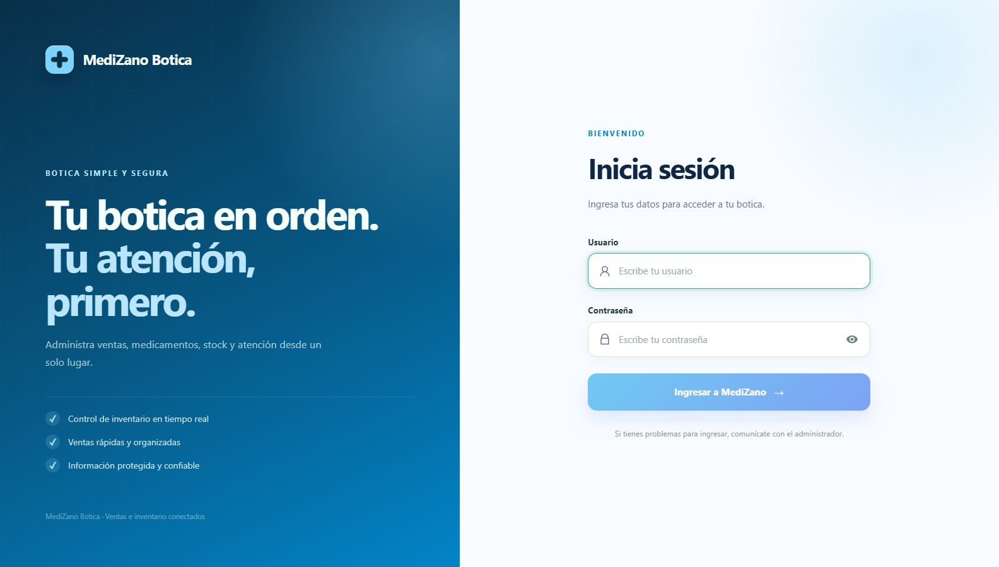
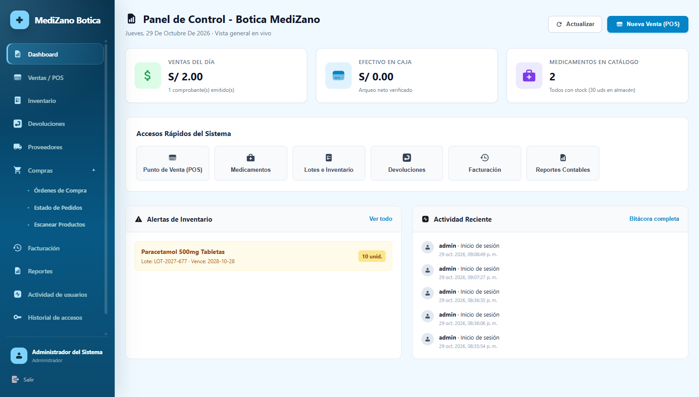
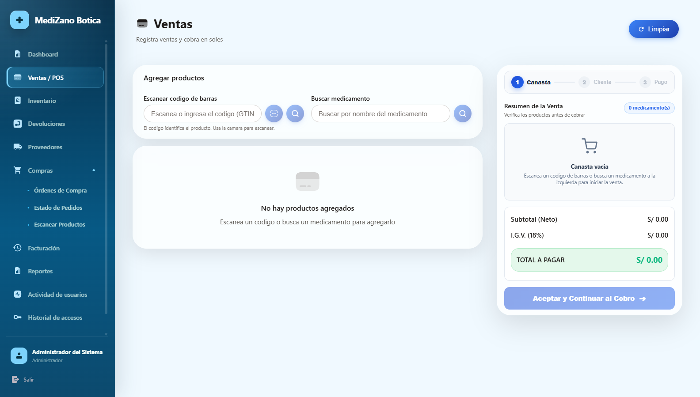
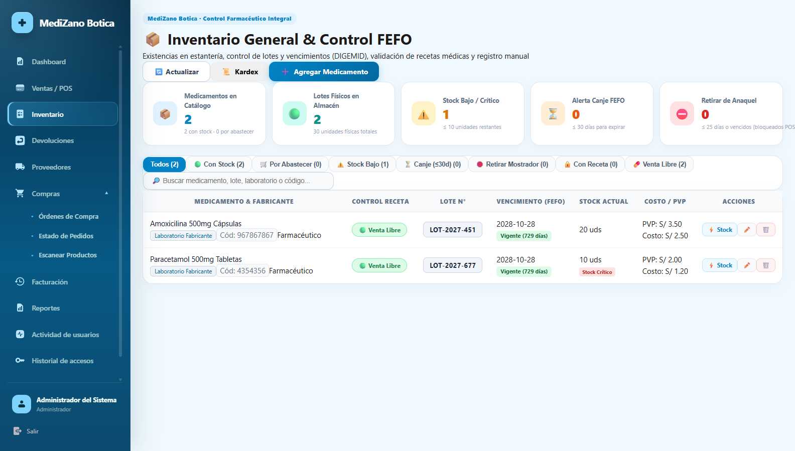
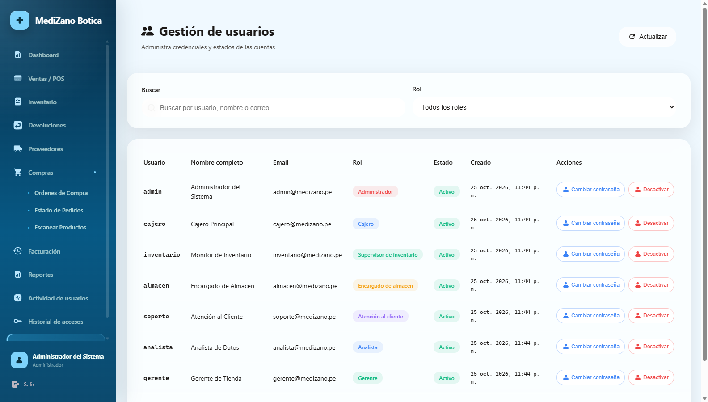

S11 - Integración con Cliente Frontend (Angular 17 + Nginx + API Gateway)¶
Sesión S11 · Desarrollo de Aplicaciones Distribuidas (UPeU)
Componente Frontend:clients/medizano-frontend(Angular 17 Standalone & Modules, Tailwind/SCSS)
Alojamiento: Nginx Alpine Container (Puertos:80HTTP /:443HTTPS /:4200)
API Gateway Destino:infra/medizano-gateway(Puerto:8090)
1. Propósito Arquitectónico¶
La capa de presentación de MediZano POS está construida como una aplicación de una sola página (Single Page Application - SPA) utilizando Angular 17. Su propósito es proporcionar a los cajeros, farmacéuticos y administradores una interfaz web moderna, ágil y reactiva para gestionar ventas, existencias de medicamentos y auditoría.
Principios de Integración con el Sistema Distribuido:¶
- Desacoplamiento Total del Backend: El cliente web no conoce las direcciones IP ni los puertos internos de ninguno de los 8 microservicios. Todas las interacciones se canalizan a través del API Gateway (
:8090). - Reverse Proxy en Nginx: El servidor web Nginx intercepta las peticiones dirigidas a
/api/**y las reenvía internamente al Gateway, eliminando por completo bloqueos por políticas de CORS (Cross-Origin Resource Sharing) en producción. - Seguridad Basada en Tokens (JWT): La autenticación es sin estado (stateless). El frontend adquiere un token firmado por
usuario-msy lo adjunta en cada solicitud HTTP mediante un interceptor centralizado. - Control de Acceso Basado en Roles (RBAC): Las vistas y módulos críticos (POS, Inventario, Gestión de Usuarios) están protegidos a nivel de cliente por Angular Route Guards (
AuthGuardyRoleGuard).
2. Mapa de Integración Frontend ↔ Microservicios¶
El siguiente diagrama ilustra la arquitectura de integración donde el cliente web Angular y el servidor web Nginx interactúan con la totalidad de los 8 microservicios del ecosistema MediZano exclusivamente a través del API Gateway:
flowchart TD
Browser["Navegador del Usuario / Cajero"] -->|HTTPS :443| Nginx["Servidor Nginx / Angular SPA"]
Nginx -->|Archivos Estáticos HTML/JS/CSS| Browser
Browser -->|Peticiones /api/**| Nginx
Nginx -->|Proxy Reverso Interno| GW["API Gateway :8090"]
subgraph Backend ["Ecosistema Backend - 8 Microservicios"]
GW -->|Auth JWT y Auditoría| US["usuario-ms :8087"]
GW -->|Catálogo de Medicamentos| CA["catalogo-ms :8081"]
GW -->|Directorio RUC / DNI| CL["cliente-ms :8084"]
GW -->|Órdenes y Ventas POS| ORD["orden-ms :8082"]
GW -->|Stock y Kardex FEFO| INV["inventario-ms :8085"]
GW -->|Pasarelas e Idempotencia| PAG["pago-ms :8083"]
GW -->|Comprobantes SUNAT 18%| FAC["facturacion-ms :8086"]
GW -->|Compras y Abastecimiento| PRV["proveedor-ms :8088"]
end3. Evidencias del Frontend en Ejecución Real (Google Chrome)¶
Las siguientes capturas de pantalla fueron tomadas directamente desde el navegador web Google Chrome en el entorno de producción en AWS:
3.1. Pantalla de Autenticación e Inicio de Sesión (/auth/login)¶
Formulario reactivo con validaciones en tiempo real para credenciales de acceso contra usuario-ms:

3.2. Panel de Control General (Dashboard) (/dashboard)¶
Resumen ejecutivo con métricas de ventas del día, dinero en caja, conteo de medicamentos en catálogo, alertas preventivas de inventario próximo a vencer y bitácora de actividad reciente:

3.3. Módulo de Venta y Punto de Venta POS (/billing)¶
Terminal de facturación rápida estructurada en tres etapas guiadas (1. Canasta $\rightarrow$ 2. Cliente $\rightarrow$ 3. Pago). Permite escaneo de códigos de barra GTIN, búsqueda dinámica de medicamentos, cálculo automático del IGV (18%) y despacho de venta síncrono:

3.4. Control de Inventario y Kardex FEFO (/inventory)¶
Monitoreo de existencias farmacéuticas bajo la normativa DIGEMID. Visualiza lotes físicos, alertas de semáforo (stock bajo o crítico), fecha de vencimiento y condición de venta (Libre o Bajo Receta Médica):

3.5. Administración de Usuarios y Permisos RBAC (/user-management)¶
Panel de gestión administrativa donde se auditan los estados de cuenta, correos corporativos y roles asignados (Administrador, Cajero, Supervisor de inventario, Atención al cliente, Analista, Gerente):

4. Implementación Técnica en Código Angular¶
4.1. Interceptor HTTP para Inyección de Token JWT (token.interceptor.ts)¶
Cada solicitud saliente hacia /api/** es interceptada para adjuntar el encabezado Authorization: Bearer <TOKEN>:
@Injectable()
export class TokenInterceptor implements HttpInterceptor {
constructor(private authService: AuthService) {}
intercept(request: HttpRequest<unknown>, next: HttpHandler): Observable<HttpEvent<unknown>> {
const token = this.authService.getToken();
// Solo adjuntar en peticiones a endpoints de nuestra API
if (token && request.url.includes('/api/')) {
request = request.clone({
setHeaders: {
Authorization: `Bearer ${token}`
}
});
}
return next.handle(request);
}
}
4.2. Protección de Rutas con Guards (auth.guard.ts)¶
Evita que usuarios no autenticados ingresen directamente a rutas protegidas mediante la URL del navegador:
@Injectable({
providedIn: 'root'
})
export class AuthGuard implements CanActivate {
constructor(
private authService: AuthService,
private router: Router
) {}
canActivate(): boolean {
if (this.authService.isAuthenticated()) {
return true;
}
// Redirigir a login si la sesión expiró o no existe token válido
this.router.navigate(['/auth/login']);
return false;
}
}
5. Configuración del Servidor Web Nginx en Producción¶
El archivo nginx.conf empacado en la imagen Docker del frontend actúa como servidor de archivos estáticos y puente hacia el Gateway:
server {
listen 80;
server_name localhost;
# Archivos estáticos de Angular compilados (dist/)
location / {
root /usr/share/nginx/html;
index index.html;
try_files $uri $uri/ /index.html;
}
# Proxy reverso hacia Spring Cloud Gateway
location /api/ {
proxy_pass http://medizano-api-gateway:8090/api/;
proxy_set_header Host $host;
proxy_set_header X-Real-IP $remote_addr;
proxy_set_header X-Forwarded-For $proxy_add_x_forwarded_for;
proxy_set_header X-Forwarded-Proto $scheme;
}
}
6. Flujo de Autenticación de Extremo a Extremo¶
sequenceDiagram
autonumber
actor Usuario as Cajero / Farmacéutico
participant Angular as Angular 17 SPA
participant Nginx as Nginx (:80/:443)
participant Gateway as API Gateway (:8090)
participant AuthMS as usuario-ms (:8087)
Usuario->>Angular: Ingresa usuario y contraseña
Angular->>Nginx: POST /api/auth/login
Nginx->>Gateway: Reenvía /api/auth/login
Gateway->>AuthMS: POST /api/auth/login
AuthMS->>AuthMS: Valida hash BCrypt y genera JWT
AuthMS-->>Gateway: 200 OK + Token JWT + Rol
Gateway-->>Nginx: 200 OK + Payload
Nginx-->>Angular: 200 OK + Payload
Angular->>Angular: Guarda token en sessionStorage
Angular->>Usuario: Redirige a /billing (POS) o /dashboard7. Preguntas Clave para el Jurado (Sustentación Técnica)¶
- ¿Cómo resuelve la arquitectura los problemas de CORS entre Angular y los microservicios?
-
Respuesta: Mediante la configuración de Nginx como Reverse Proxy. El navegador envía todas las peticiones al mismo origen (
https://54.226.25.238/api/...). Nginx reenvía internamente al Gateway en el puerto:8090, por lo que el navegador nunca detecta un cambio de origen o puerto cruzado. -
¿Por qué se utilizó
useHash: trueen el enrutamiento de Angular? -
Respuesta:
HashLocationStrategyasegura que cualquier recarga de página (F5) en rutas profundas como#/inventorysea manejada por el motor de rutas del cliente sin requerir reescrituras complejas de servidor ni generar erroresHTTP 404 Not Founden Nginx. -
¿Dónde se almacena el JWT y qué ocurre si un usuario manipula su rol en el navegador?
- Respuesta: El token se almacena en
sessionStorage. Si un usuario altera los datos locales o el DOM para acceder a una pantalla no permitida, cualquier petición HTTP hacia el backend será rechazada con401 Unauthorizedo403 Forbiddenpor los filtros de seguridad del API Gateway y Spring Security, ya que el token JWT está criptográficamente firmado con una clave secreta que el cliente no puede falsificar.